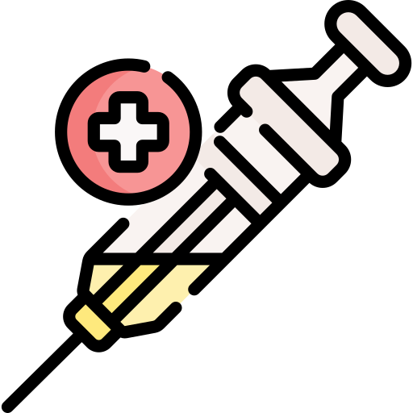

Je očkování bezpečné?
Ano
Příchod očkování proti COVID-19 představuje významný pokrok v boji proti pandemii koronaviru. Čím více lidí bude očkováno, tím více se bude život navracet k normálu. Mnozí se ptají, zda je očkování proti nemoci COVID-19 bezpečné. A i když se někteří lidé potýkají s mírnými nežádoucími účinky, dá se pod tíhou důkazů prohlásit, že je očkování extrémně bezpečné.
 Vakcína proti COVID-19
Očkovaných
proti COVIDu
649 868
Nahlášených
vedlejších účinků
996
 COVID-19
onemocnění
COVID-19
onemocnění
Infikovaných
COVIDem
1 235 480
COVID
úmrtí
20 339
Data pro 🇨🇿 za období od 1.3.2020 do 28.2.2021.